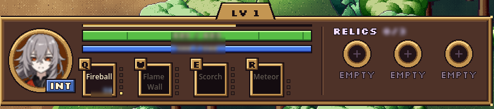
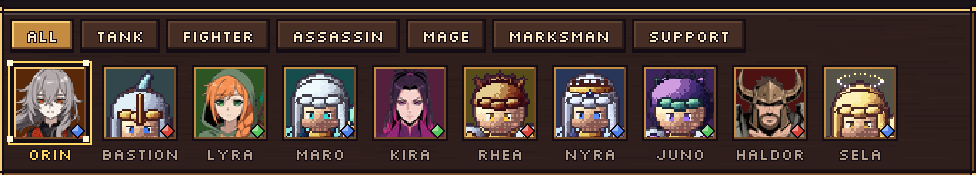

Devlog #8: Kills, a bronze HUD and new heroes
Same day, second update. The pixel-art look now reaches the menus and the HUD, three more heroes got their redrawn sprites, every hero starts with attribute points, and taking down an enemy hero finally feels like an event.
Three more heroes redrawn
Kira Vex, Lyra Thorn and Haldor Quakeborn joined Orin with full sprite sets: many more frames for idle, run, attack, cast and death in all eight directions, each timed to match the hero's real attack and death. Kira is sleek and fast, Lyra is a hooded archer with a longbow, and Haldor is a horned, rock-armoured giant. All four also have drawn portraits for the HUD and hero select.
Kills that feel like kills
Taking down an enemy hero now pays off and looks the part. The killer gets bonus experience, with extra for first blood, for ending an enemy's kill streak and for chaining kills together. Teammates who helped get a share wherever they are on the map, so supporting a fight is worth it. All of it still goes through the relic rule: the more relics you hold, the less experience you gain, so the leading team can't snowball forever.
On screen you get call-outs like First Blood, Double Kill and Shutdown, a brief hit-stop on the killing blow, a white-hot flash on the hero, a burst effect, a camera kick and a sound to confirm the kill.
A carved bronze HUD

The HUD is now a chunky carved-wood and bronze console drawn as pixel art, in a matching pixel font: a portrait medallion, health, mana and experience bars, ability sockets that fill as cooldowns finish, rank pips, gem sockets for your relics, attribute tablets with buttons to spend your points, a pennant scoreboard with the match clock, a banner for the next relic arena, a kill feed and a bronze-framed minimap.
A new hero select

Hero select now looks like a reliquary hall: blue's seats down the left, red's down the right, a pick timer at the top, and the chosen hero standing on an altar beside their starting attributes, level-one stats and full kit. Role tabs filter the grid, and taken heroes fade out. Online and offline use the same screen.
Starting attributes
Every hero now starts with a handful of Strength, Agility and Intelligence points, weighted toward their primary attribute, and each level adds more for you to spend. The roster on the home page shows each hero's starting spread.
Next
Redrawing the other six heroes, and a new tester build with all of this in it.
Proof of date
git commit 9675b0aa7a127d80f07e357ed1e88e93decfa632